Le Sénégal de 2020, sa francophonie et son multilinguisme
par Yves MONTENAY
L’occasion d’un voyage au Sénégal m’a été donnée par le Rotary club qui finance la mise en place de ressources en eau pour des agriculteurs de la ville de Fimela. Ce voyage avait comme objectif la mise à jour de mes connaissances sur ce pays avec, en prime, l’exploration de la Casamance que je ne connaissais jusqu’à présent que par mes lectures.
La Chine et ses virus vue de Dakar
J’ai été d’abord accueilli par le Rotary club « doyen » de Dakar, c’est-à-dire le club le plus ancien de ce pays, fondée en 1940, qui regroupe des acteurs de la société sénégalaise dans sa diversité : chrétiens et musulmans, Européens, Libanais et Sénégalais.
Ce club m’avait demandé de faire un exposé sur la situation chinoise.
L’actualité m’a imposé comme fil conducteur « la Chine et ses virus » ces derniers étant soit médicaux (SRAS de 2003, peste porcine, Coronavirus de 2019), soit d’une autre nature, comme la crise démographique et l’étouffement de la libre information, étouffement qui me paraît menacer son développement à long terme, notamment scientifique.
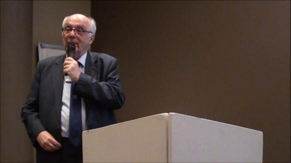J’ai donc présenté la Chine comme « un succès mais non un miracle 1», les causes de ce succès étant en train de s’affaiblir.
La discussion a fait apparaître la variété des points de vue sénégalais sur ce pays qui, comme en France, d’un côté impressionne et de l’autre inquiète2.
En particulier la Chine venait de « rafler » la récolte d’arachide, principal produit agricole du Sénégal, en l’achetant au-dessus du prix garanti et en l’exportant à l’état brut. Cela a fait le bonheur des agriculteurs, mais le malheur des huileries et de toute la chaîne aval qui se retrouve sans travail.
D’où le débat : l’influence politique, culturelle et financière, ainsi que l’immigration chinoise sont-ils du néocolonialisme ?
Mais revenons au Sénégal.
Dakar
Le contraste entre l’aérodrome international de Dakar et l’aérodrome parisien de Roissy Charles De Gaulle est vertigineux : tout y est en français, langue officielle et scolaire, à part l’inévitable « sortie/exit » et autre signalisation basique. Rien en anglais, ni d’ailleurs en wolof ou arabe.
À force de chercher, on finit certes par trouver quelques mots anglais dans une phrase de l’opérateur Orange, mais qui fait bien pire en France !
Depuis mon dernier passage, la ville de Dakar a accueilli une autoroute démarrant en centre-ville et allant jusqu’au nouvel aéroport international Blaise Diagne, situé à 47 km au sud-est de Dakar, et le long de laquelle est en train de se construire une véritable ville nouvelle, Diamniadio3.
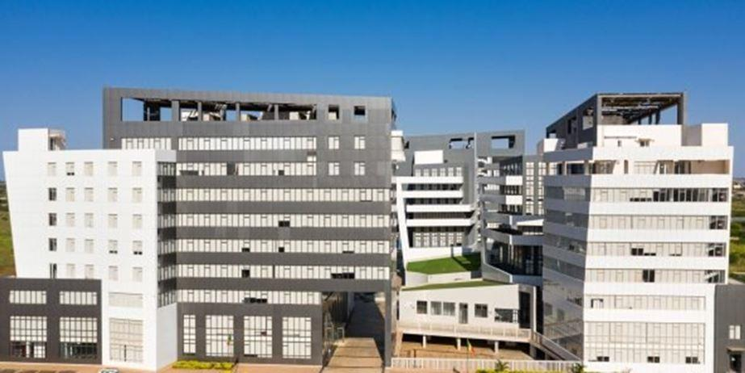
Diamniadio
Cela n’empêche pas le centre-ville de se densifier avec de plus en plus d’immeubles de hauteur sans élargissement des trottoirs ni espaces verts supplémentaires. Cela maintient dans la ville les gaz d’échappement et l’air chaud des climatiseurs… Bref on étouffe, malgré la situation remarquable de la ville, presqu’île plongée dans l’océan, qui pourrait être verte et fraîche…
Le décor urbain, là aussi, est resté d’une francophonie quasi totale. Le marché populaire du plateau (le centre-ville historique, terme que l’on retrouve d’Abidjan à Montréal) n’a pas beaucoup changé.
L’offre s’est diversifiée avec des produits alimentaires plus variés en général sous emballage francophone, et venant souvent de France, voisinant avec une marée de petits matériels électroniques sous emballage en anglais et mandarin…
Après Dakar, direction Fimela !
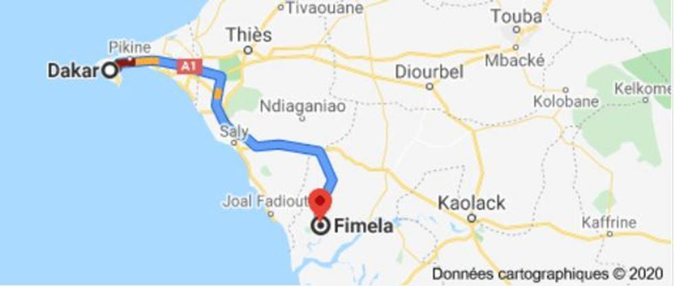
Fimela
Notre groupe Rotary part dans la provisoire fraîcheur matinale (il fera bientôt 40 à l’ombre) pour Fimela, ville sur la rive nord du Siné Saloum, un ensemble de bras de mer ayant envahi le cours inférieur des petits fleuves Siné et Saloum.
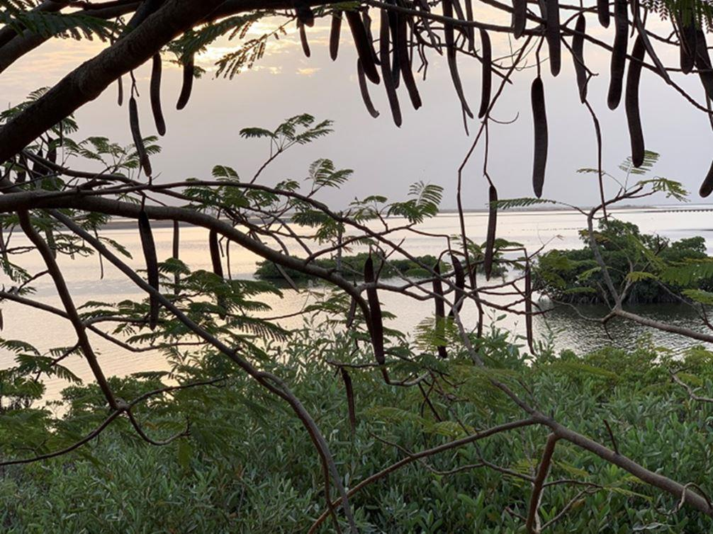
Bras de mer Siné Saloum à Fimela
C’est une des régions touristiques du Sénégal qui en comporte de nombreuses, de Saint-Louis à l’extrême nord du pays au Club Méditerranée du Cap Skirring à son extrémité sud.
Nous rejoignons le reste de l’équipe agricole à la mairie, très modeste… bien que d’une agglomération d’environ 30 000 habitants.
Cette agglomération est très active entre ses nombreux hôtels et activités touristiques sur la rive du bras de mer, son agriculture et production de jus de fruits (avec l’aide de vastes panneaux solaires), sans parler des activités habituelles dont un lycée. J’ai eu la chance de pouvoir réaliser une entrevue en vidéo du maire de la commune de Fimela, Karim Sène, que vous trouverez plus bas.
Et cette activité n’est pas seulement le petit commerce et l’artisanat d’objets « traditionnels », comme le retiennent les touristes, mais aussi la production, dont de nombreux éléments nécessaires au bâtiment privé ou administratif, dont la croissance reflète la démographie, ainsi que ceux qui nécessaires pour l’automobile et autres engins à moteur.
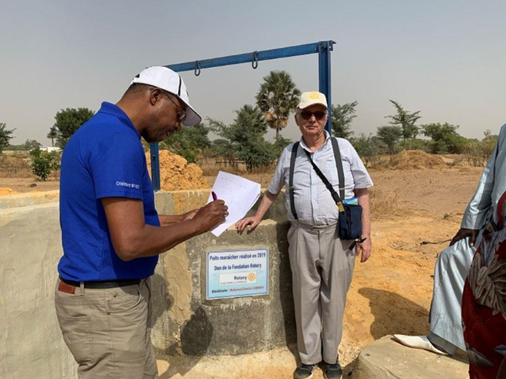
Les puits de Fimela avec la plaque du Rotary
Notre équipe se dirige vers le petit complexe agricole que nous soutenons, qui comprend 7 lots, dont l’un attribué à une femme, avec chacun leur puits et une base commune comprenant un centre de formation à la culture biologique.
L’inspection se révèle satisfaisante et permettra le déblocage du solde de l’aide du Rotary.
Après Fimela, direction la Casamance !
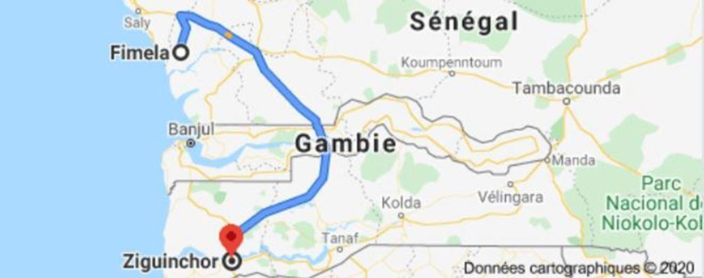
La Casamance
Pour aller dans cette région du sud du Sénégal, il faut d’abord traverser la Gambie, colonie anglophone enfoncée profondément en territoire sénégalais et vivant notamment de contrebande.
Des pays moins pacifiques que le Sénégal auraient « réglé le problème » depuis longtemps, mais on ne peut pas avoir une chose et son contraire : un pays calme et une aventure politique, et éventuellement militaire, visant un pays faisant alors partie du Commonwealth, et qui vient d’y adhérer de nouveau.
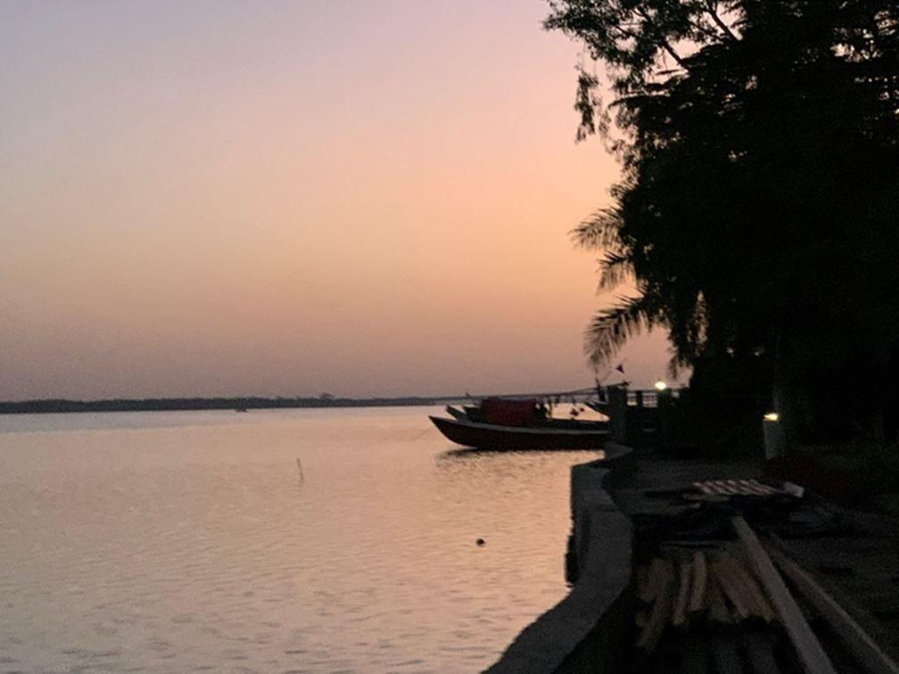
Casamance, Sénégal
La Casamance, c’est aussi le nom d’un profond bras de mer, qui se subdivise en d’innombrables canaux et lagunes entrecoupées de mangroves.
La capitale, Ziguinchor, lointainement fondée par les Portugais avant son acquisition à l’amiable par les Français, borde la Casamance et son charme attire de nouveau les touristes depuis la fin des « désordres » en 2013.
« Désordres » et non «guerre civile » est le terme aujourd’hui politiquement correct, même si on admet qu’il était dangereux de s’éloigner de Ziguinchor. Ces troubles étaient le reflet de l’opposition climatique (terre et eau en abondance), ethnique et religieuse avec le reste du Sénégal.
D’où une immigration venue du nord du pays largement musulman et wolophone, alors que la population locale est souvent catholique et parle le dioula.
Heureusement la tolérance générale a fini par l’emporter, couplée à la promesse d’une réunification administrative de la Casamance et de son autonomie. J’espère avoir bien compris…
Mes interlocuteurs ont insisté sur une spécificité culturelle de la Casamance : la permanence du fond culturel « animiste » tant chez les chrétiens que chez les musulmans, « animisme » conçu non comme une religion mais comme un rapport à la nature… en avance sur l’écologisme occidental rajoutent certains.
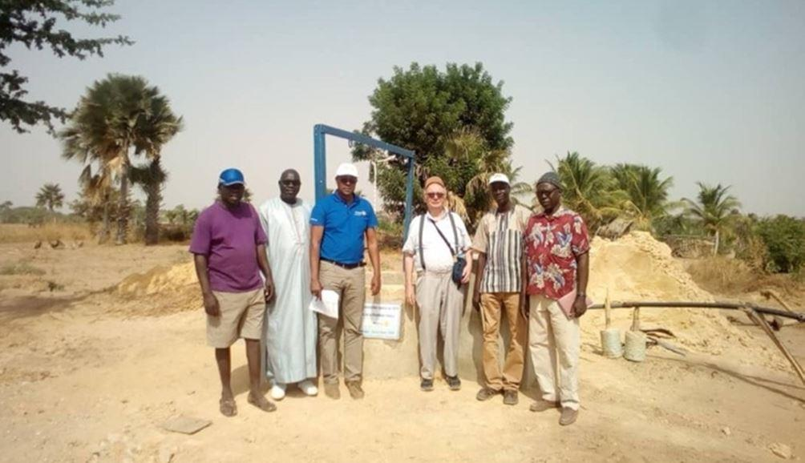Mon expérience africaine me suggère néanmoins que cette permanence discrète de l’animisme ne se limite pas à la Casamance.
Revenons aux paysages verdoyants contrastant avec la sécheresse du nord du pays : de Ziguinchor à la côte, on a l’impression de ne pas quitter niveau de la mer et les mangroves : une grande partie du paysage disparaît à marée haute.
Néanmoins, là où il y a suffisamment de terre ferme, la pluie de l’été évacue le sel et est stockée dans des rizières. Si on y ajoute les cultures fruitières et le tourisme, on a une économie locale relativement prospère.
Le tourisme est illustré par le Club Méditerranée bien connu du Cap Skirring, qui, avec quelques autres hôtels agréables, illustre parmi 1000 autres dans le monde, la trilogie « soleil, palmiers, plage ».
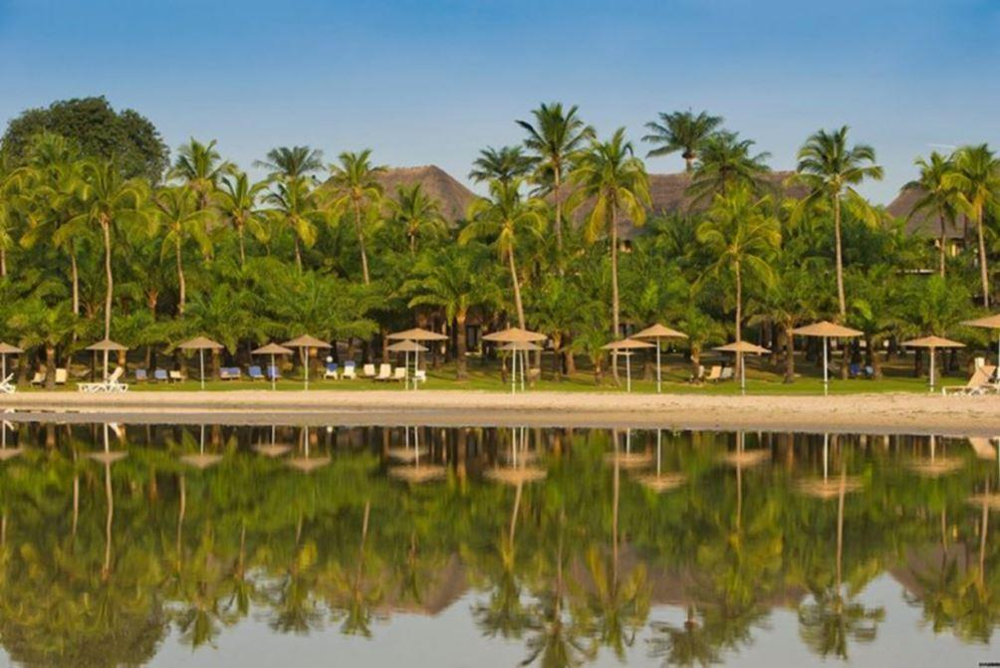
Club Med Cap Skirring – Sénégal
Le français, le wolof et les autres langues à l’école
À chacune de nos étapes – Dakar, Fimela, la Casamance – les conversations, en excellent français, ont été très libres sur tous les sujets et particulièrement ceux qui concernent mon activité et celle de l’ICEG, à savoir le développement économique et la situation relative des langues dans le pays.
Si le français est l’unique langue officielle et scolaire, la majorité de la population parle le wolof, une plus grande majorité le comprend et l’utilise occasionnellement à côté des autre langues « nationales » dont le sérère et le dioula.
L’interview d’élèves du primaire et du secondaire impressionne par la qualité de leur français et l’ambition des manuels. Il s’y ajoute les autres compétences en langues (le wolof, la langue locale, et deux langues étrangères, l’anglais et une autre langue européenne, parfois le portugais assez présent avec les Cap-verdiens et les originaires de la Guinée-Bissau).
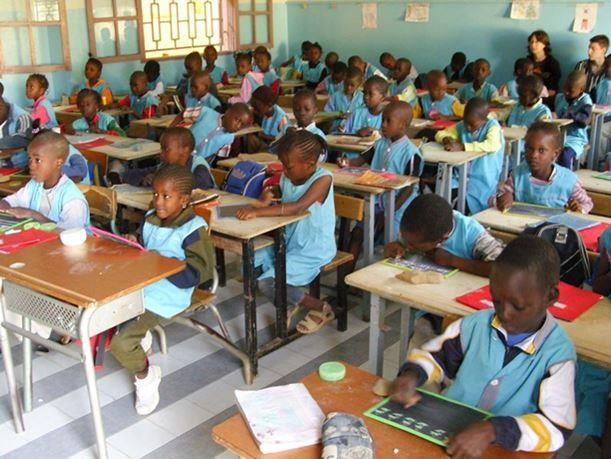Le hasard m’aurait-il fait tomber sur les meilleurs élèves ? Le contraste est net avec la masse des adultes et des « vieux » non scolarisés.
En simplifiant beaucoup, la fraction de la population scolarisée dans l’enseignement public ou privé, hors écoles coraniques4, a donc une bonne connaissance du français. Quel est l’importance de cette fraction ? Une synthèse rapide des chiffres très variés de l’Unesco donne autour de 65 % d’alphabétisés chez les 15/24 ans mais seulement de 50 % pour l’ensemble des adultes.
Bref il reste beaucoup à faire, tant pour la connaissance du français que pour le développement économique du pays.
… dans la vie courante
Cette fraction scolarisée sait utiliser verbalement le français, même si son usage n’est pas quotidien, sauf dans certains métiers où certaines circonstances comme le prêche dominical pour une partie des chrétiens, tandis que le prêche musulman, massivement majoritaire, serait en arabe puis traduit, surtout en wolof. En effet, même les anciens des écoles coraniques ne parlent pas arabe : réciter le Coran par cœur ne suffit pas pour cela.
Toutefois, malgré l’usage général du wolof, et lorsque les deux parents et tous les enfants ont été scolarisés, on voit, selon certains témoignages, apparaître des conversations familiales en français, ce qui rappelle le début du processus, beaucoup plus ancien et beaucoup plus avancé, qui a fait du française la langue familiale dans une partie notable de la Côte d’Ivoire, du Cameroun, du Gabon…
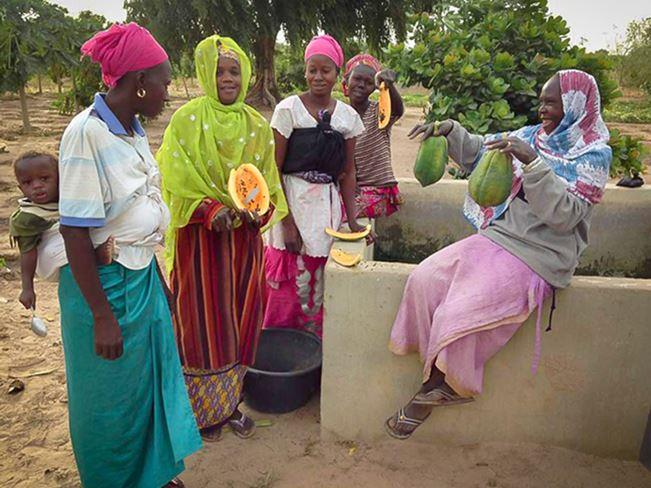L’usage du français à l’écrit est prépondérant, car le wolof et les autres langues nationales n’étant pas enseignées à l’école, souvent on ne sait pas les écrire.
Ce contexte explique qu’il y ait sur les réseaux sociaux un débat assez vigoureux sur la nécessité de réduire le rôle du français5, voire de le supprimer, et d’augmenter celui du wolof (donc dans un 2e temps de l’arabe et de l’anglais).
Beaucoup d’interlocuteurs estiment toutefois ce débat tout à fait artificiel et limité à certains milieux éloignés des nécessités économiques et intellectuelles pratiques, ou le fait de politiques qui veulent « se poser en s’opposant ». Des arguments pédagogiques se mêlent à des sensibilités politiques, et je laisse ce débat aux Sénégalais.
Le français, outil de coopération
Je constate que les opérationnels (par opposition aux « purs » intellectuels) participent à une coopération importante, officielle, mais surtout « décentralisée » avec la France ou des O.N.G. francophones, qu’illustre bien mon interview du maire de la commune de Fimela :
Cette « coopération décentralisée » s’oppose à « l’officielle », c’est-à-dire d’État à État ou en provenance d’organisations multilatérales, dont les fonds suivent des circuits plus administratifs et … « moins sécurisés » (façon polie d’évoquer la corruption).
Les municipalités comptent par exemple sur la coopération avec les communes du Nord pour résoudre le problème des déchets, envahissants comme dans la plupart des autres pays du Sud. La prise de conscience est faite et les municipalités travaillent à le résoudre.
Ces opérationnels -pas seulement municipaux- ont ainsi conscience de participer à la famille francophone. Et non « française ». C’est l’occasion de rappeler une phrase d’Emmanuel Macron : « Il n’y a plus de culture française, mais une culture francophone ». Phrase malheureusement tronquée (« Il n’y a plus de culture française ») par des ignorants de l’Afrique.
Un masochisme français
Je ne vois pas pourquoi beaucoup d’intellectuels français insistent sur le côté « colonial » de notre langue, à l’opposé des anglophones et des arabophones, pourtant tout aussi « coloniaux » au sud du Sahara.
Ces intellectuels regroupent bizarrement deux camps opposés : à gauche les « repentants du colonialisme » et, à droite, les épouvantés par une immigration africaine que la communauté de langue dirigerait d’abord vers la France : « je préférerais qu’ils parlent anglais et ne viennent pas chez nous, tant pis pour l’avenir du français.».
Les Français sous-estiment par ailleurs souvent la qualification réelle des immigrés africains, tant maghrébins que sub-sahariens, et les métiers qu’ils exercent en France : on pointe « les assistés » non qualifiés, parfois délinquants, en oubliant qu’ils sont souvent interdits de travail en attendant l’examen de leur dossier ; on ne voit pas les médecins et les informaticiens… tout simplement parce qu’ils sont intégrés.
Une meilleure information, ni méprisante ni « victimaire », serait un grand progrès, mais c’est un autre sujet.
Bref, venez au Sénégal, un des pays les plus calmes et les plus démocratiques d’Afrique, et qui nous aide à sauvegarder le français, langue mondiale et maintenant surtout africaine.
Partager cette page